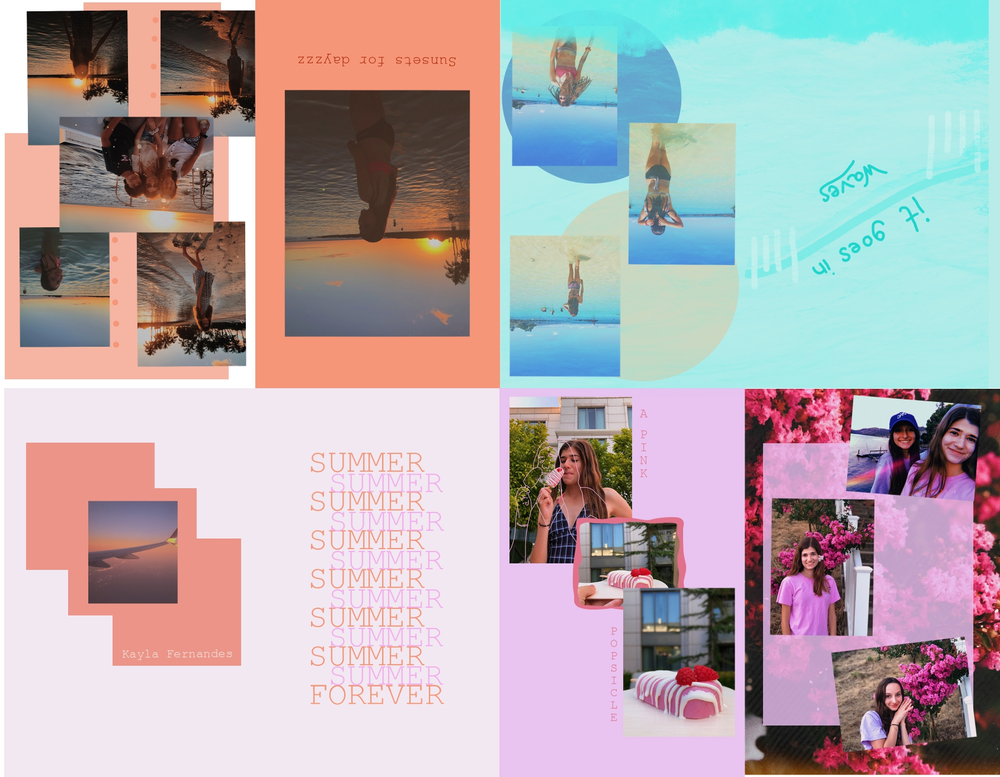

Zine Layout

The challenge for this project was to create a zine that looked professional and would appeal to specific audiences interested in that summertime feeling. I wanted to encourage users within this target audience to be reminded of the happy times summer brings. The images I chose tell a story based on colors every page has a mood and story. The pink is for the flowers of summer, the blue for the waters, and orange for the sunsets. All of the pages show happy times that we never want to end but always do. Utilizing shapes help to accurately convey my message that every summer consists of different feelings. The zine tells a story from start to finish, one of a forever summer. Feel free to reach out if you have any questions!